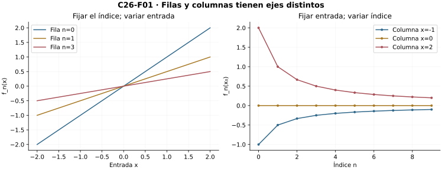
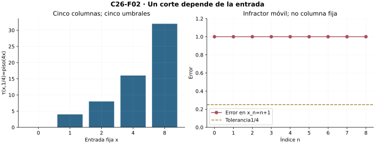
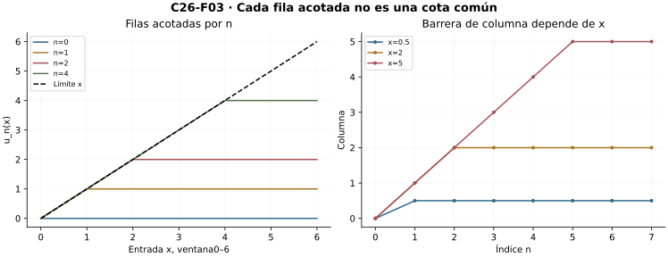
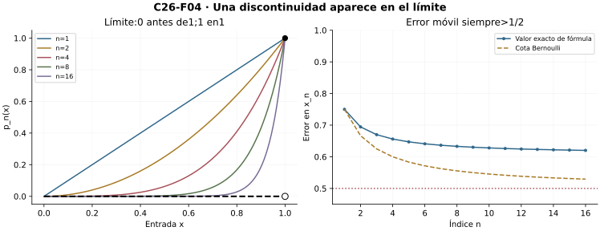
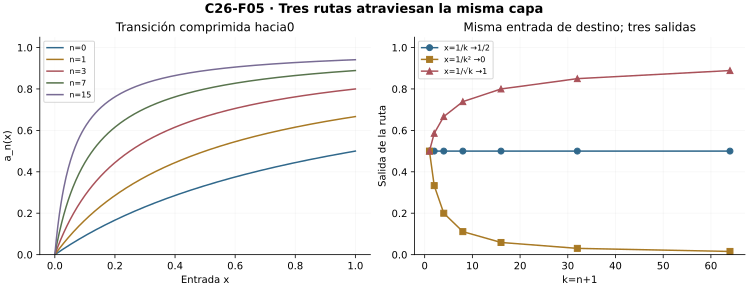
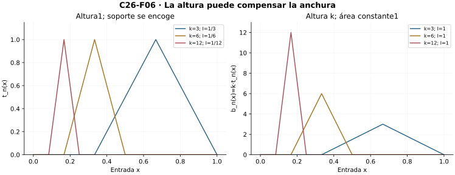
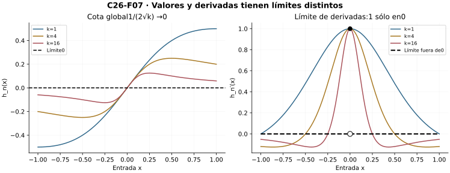
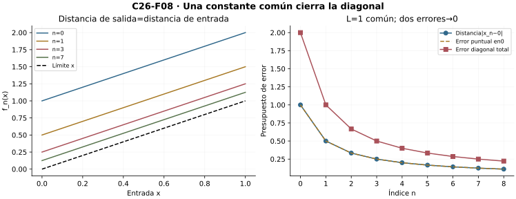

Capítulo 26 — Sucesiones de funciones: converger punto por punto
Índice del libro · Capítulo 26 · Ejercicios · Soluciones · Soluciones de microcontroles
Una etapa entrega ahora una función entera. Miraremos sus columnas con las herramientas numéricas de C06 y preguntaremos qué cambia cuando también cambia la entrada. C12–C14 aportan tipos, límites y continuidad. C03 y las interfaces de C18/C23/C24/C25 se declaran al usarlas en pruebas y ejemplos; no se importan resultados de C27 o C28.
26.1. Dos índices, dos maneras de mirar
Una sucesión numérica entrega un número para cada índice. Ahora cada índice entrega una función completa. El dominio permanece fijo: sea \(X\subseteq\mathbb R\), y para cada \(n\in\mathbb N=\{0,1,2,\ldots\}\) sea \(f_n:X\to\mathbb R\). El número \(f_n(x)\) tiene dos argumentos de naturaleza distinta: \(n\) ordena las etapas; \(x\) señala una entrada del dominio. Cambiar el dominio entre etapas impide comparar columnas sin declarar antes una restricción común.
Construir el objeto sin confundir sus representaciones
Por la teoría elemental de conjuntos y funciones declarada en C12, la colección \(\mathcal F(X,\mathbb R)\) existe: sus elementos son los subconjuntos de \(X\times\mathbb R\) que satisfacen existencia y unicidad de salida. Una sucesión de funciones es una aplicación \(\mathbb N\to\mathcal F(X,\mathbb R)\). Equivalentemente, podemos dar una sola función \[ F:\mathbb N\times X\to\mathbb R,\qquad F(n,x)=f_n(x). \] En la ida, la evaluación produce una salida única; en la vuelta, la sección \(x\mapsto F(n,x)\) produce cada función. No se elige una salida entre varias. El grafo reúne pares con salidas ya únicas.
Fijar \(n\) deja la fila \(f_n\); fijar \(x\) deja la sucesión numérica \(n\mapsto f_n(x)\). La gráfica de una fila vive en \(X\times\mathbb R\). Una columna se dibuja con índice horizontal y valor vertical. Usar un mismo dibujo sin distinguir esos ejes puede hacer parecer que la convergencia cambia el dominio.
Por ejemplo, \[ f_n(x)=\frac{x}{n+1},\qquad X=\mathbb R. \] El denominador es positivo para todo índice, por lo que cada fila es una función real bien definida. En \(x=2\) vemos \(2,1,2/3,\ldots\); en \(x=-1\) vemos \(-1,-1/2,-1/3,\ldots\). Para una entrada fija \(x\), el error respecto de cero es \(|x|/(n+1)\). El destino es el mismo, pero los umbrales que lo certifican pueden depender de la columna.
El conjunto donde las columnas convergen
No toda familia converge en todo su dominio. Definimos \[ C=\{x\in X:\text{existe }y\in\mathbb R\text{ con }f_n(x)\to y\}. \] Para cada \(x\in C\), la unicidad de C06 identifica un único \(y\). El subconjunto \[ G=\{(x,y)\in C\times\mathbb R:f_n(x)\to y\} \] es, por tanto, el grafo de una función \(f:C\to\mathbb R\). No se invoca una selección numerable de límites: existencia y unicidad en cada fibra son precisamente la condición de función.
Para \(f_n(x)=(-1)^n x\) en \(\mathbb R\), la columna de cero es constante y converge. Si \(x\ne0\), las subsecuencias pares e impares son constantes de valores \(x\) y \(-x\). Un supuesto límite tendría que coincidir con ambos por la transferencia a subsecuencias de C06; son distintos. Así \(C=\{0\}\). Dar la fórmula de cada fila no garantiza la existencia de una función límite en todo \(X\).
Si \(X\) es vacío, existe una única función \(X\to\mathbb R\) y toda afirmación para sus entradas es vacua. Los ejemplos y las refutaciones siguientes tendrán dominios no vacíos. Una figura con unas pocas columnas permite leer el tipo del objeto; no certifica las columnas que no muestra.

Microcontroles
- ¿Qué queda fijo al mirar una columna?
- ¿Qué objeto es una fila?
- ¿Por qué se declara un dominio común?
- ¿En qué producto vive el grafo de una fila?
- ¿Qué garantiza salida única en el grafo del límite?
- ¿Debe converger toda columna de una familia dada?
- ¿Qué sucede si el dominio es vacío?
- ¿Bastan tres columnas dibujadas para probar convergencia en un intervalo?
26.2. Una cola para cada entrada
Decimos que \(f_n\) converge puntualmente a \(f:X\to\mathbb R\) si \[ \forall x\in X\ \forall\varepsilon>0\ \exists N\in\mathbb N\ \forall n\ge N:\quad |f_n(x)-f(x)|<\varepsilon. \] Es exactamente la convergencia numérica de C06 aplicada a cada entrada fija. Recibimos \(x\) y \(\varepsilon\) antes de construir \(N\); después controlamos toda la cola en esa entrada. Escribimos \(f_n\to f\) puntualmente en \(X\) y dejamos explícito el dominio.
Responder al desafío completo
Para \(f_n(x)=x/(n+1)\) y \(x=0\), sirve \(N=0\). Si \(x\ne0\), por la arquimedianidad de C03 elegimos un natural \(N>|x|/\varepsilon\). Para \(n\ge N\), \[ |f_n(x)|=\frac{|x|}{n+1} \le\frac{|x|}{N+1}<\varepsilon. \] La elección sirve también para \(x=0\), pero separar la columna constante muestra que no necesitamos dividir por cero. La prueba responde a todo \(x\) real y a toda tolerancia; comprobar dos entradas de una tabla no lo haría.
La dependencia permitida no es una dependencia obligatoria. Una familia puede tener un corte que funcione simultáneamente en muchas entradas. La definición puntual no exige ese privilegio. Si lo hay para un conjunto finito \(A=\{x_1,\ldots,x_m\}\), lo podemos obtener: para una tolerancia fija, tomamos los \(m\) cortes y su máximo. Toda cola posterior satisface las \(m\) obligaciones. Si \(A\) es vacío, sirve cualquier corte. No se toma el máximo de una colección infinita de umbrales.
Unicidad y negación
Si \(f_n\to f\) y \(f_n\to g\) puntualmente, fijemos \(x\). Si \(d=|f(x)-g(x)|>0\), los dos cortes para \(d/3\) tienen un máximo \(N\). Entonces \[ d\le |f(x)-f_N(x)|+|f_N(x)-g(x)|<2d/3, \] contradicción. Por tanto \(f(x)=g(x)\) para toda entrada y C12 da igualdad de funciones.
La negación, para una candidata \(f\) fija, es \[ \exists x\in X\ \exists\varepsilon_0>0\ \forall N\in\mathbb N\ \exists n\ge N:\quad |f_n(x)-f(x)|\ge\varepsilon_0. \] El punto infractor debe permanecer fijo cuando \(N\) varía. Si ante cada corte fabricamos una entrada distinta, habremos refutado una obligación simultánea más fuerte, no necesariamente la convergencia puntual.
Para \((-1)^n x\) y candidata cero, \(x=1\) y \(\varepsilon_0=1/2\) dan error1 en todo índice. Esto sí es una refutación puntual. Para \(x/(n+1)\), escoger \(x_n=n+1\) da error1 en cada etapa, pero la entrada cambia; la prueba anterior sigue mostrando convergencia puntual en \(\mathbb R\).
Umbrales mínimos sin elegir infinitamente
Para cada par \((x,\varepsilon)\), el conjunto \[ H(x,\varepsilon)=\{N\in\mathbb N:\forall n\ge N,\ |f_n(x)-f(x)|<\varepsilon\} \] es no vacío cuando hay convergencia puntual. El buen orden de los naturales da su mínimo \(\tau(x,\varepsilon)\). Esta regla es única y define una función sobre los pares autorizados. Si \(\varepsilon\) disminuye, las obligaciones se vuelven más fuertes y el umbral mínimo no puede disminuir. Una fórmula suficiente de corte puede ser mayor que \(\tau\); minimalidad y validez son preguntas distintas.

Microcontroles
- ¿De qué datos puede depender el corte puntual?
- ¿Qué cuantificador sigue a la elección del corte?
- ¿Qué debe permanecer fijo al refutar convergencia hacia una candidata?
- ¿Qué demuestra una entrada infractora que cambia con el corte?
- ¿Por qué dos funciones límite puntuales coinciden?
- ¿Cómo se reúnen los cortes de un conjunto finito de entradas?
- ¿Cómo se define el umbral mínimo \(\tau(x,\varepsilon)\)?
- ¿Qué ocurre con \(\tau\) al disminuir la tolerancia?
26.3. Lo que se transporta columna por columna
Las operaciones puntuales se definen fila por fila y entrada por entrada. Para probar su convergencia fijamos primero \(x\). Reutilizar resultados numéricos es legítimo porque entonces todos los términos que intervienen son reales de sucesiones ya dadas. Es útil reconstruir las estimaciones para ver dónde quedan las dependencias.
Sumas, productos y cocientes
Si \(f_n\to f\) y \(g_n\to g\) puntualmente en \(X\), entonces \(\alpha f_n+\beta g_n\to\alpha f+\beta g\) para constantes reales. Repartimos una tolerancia entre los errores: bastan errores menores que \(\varepsilon/[2(|\alpha|+1)]\) y \(\varepsilon/[2(|\beta|+1)]\). El máximo de los dos cortes da error total menor que \(\varepsilon\).
Para el producto, la convergencia de \(f_n(x)\) da una cola con \(|f_n(x)|\le |f(x)|+1=:B_x\). Allí \[ |f_n(x)g_n(x)-f(x)g(x)| \le B_x|g_n(x)-g(x)|+|g(x)|\,|f_n(x)-f(x)|. \] Elegimos los dos errores con los denominadores positivos \(2(B_x+1)\) y \(2(|g(x)|+1)\) y reunimos los tres cortes. No hemos obtenido una cota de \(f_n\) que valga en todo \(X\); sólo la cota necesaria en la entrada fijada.
Si \(g(x)\ne0\), una cola con error menor que \(|g(x)|/2\) satisface \(|g_n(x)|>|g(x)|/2\). En esa cola el recíproco está definido y \[ \left|\frac1{g_n(x)}-\frac1{g(x)}\right| \le\frac{2|g_n(x)-g(x)|}{|g(x)|^2}\longrightarrow0. \] Esto prueba el cociente por el producto. Para hablar de una sucesión de funciones \(f_n/g_n\) sobre un dominio fijo \(Y\), se debe asegurar \(g_n(x)\ne0\) para todo \(n\) y \(x\in Y\), o declarar valores de reparación para los ceros de cada fila. Que cada columna deje de tener ceros eventualmente no produce automáticamente un único comienzo válido para todas.
Orden, encierro y composición
Si para la entrada fija \(x\) se tiene \(f_n(x)\le g_n(x)\) eventualmente, entonces \(f(x)\le g(x)\). De fallar, con distancia \(d=f(x)-g(x)>0\), dos errores menores que \(d/3\) harían \(f_n(x)>g_n(x)\) en una cola, contradicción. El comienzo de la desigualdad puede depender de \(x\).
Si \(a_n(x)\le f_n(x)\le b_n(x)\) eventualmente y ambos extremos convergen al mismo \(h(x)\), entonces para errores extremos menores que \(\varepsilon\) también \(|f_n(x)-h(x)|<\varepsilon\). Para una función \(\phi:D\to\mathbb R\) continua en \(f(x)\in D\), y todas las entradas \(f_n(x)\in D\), el radio de continuidad seguido del corte puntual prueba \(\phi(f_n(x))\to\phi(f(x))\). La pertenencia al dominio va antes de componer. No se necesita continuidad de cada \(f_n\) para estas reglas.
Tres alcances de acotación
La convergencia puntual implica que para cada \(x\) hay \(B_x\) con \(|f_n(x)|\le B_x\) para todos los índices: una cola acotada y el máximo de los términos iniciales finitos dan esa barrera por C06. No implica una constante común para todas las entradas e índices. Tampoco la acotación de cada fila implica una cota común entre filas.
En \([0,\infty)\), \(u_n(x)=\min(n,x)\) converge a \(u(x)=x\): para \(n\ge x\) ya coincide. Cada fila está acotada por \(n\), pero el límite no está acotado. En cambio, si \(|f_n(x)|\le B\) para todos \(n,x\), la preservación del orden da \(|f(x)|\le B\) para todo \(x\). La posición de la constante dentro o fuera de los cuantificadores determina qué puede heredarse.

Microcontroles
- ¿Qué cota usa la prueba del producto?
- ¿Qué barrera necesita el recíproco?
- ¿Garantiza un denominador límite no nulo que todas las filas del cociente estén definidas?
- ¿Se hereda una desigualdad estricta eventual?
- ¿Qué exige componer con una función exterior continua?
- ¿Qué acotación produce una columna convergente?
- ¿Puede un límite puntual de filas acotadas ser no acotado?
- ¿Qué sucede si todas las filas tienen una misma barrera de magnitud?
26.4. Potencias y una discontinuidad nueva
En \(X=[0,1]\) definimos \(p_0(x)=1\) y \(p_{n+1}(x)=x\,p_n(x)\). Así \(p_n(x)=x^n\) para \(n\ge1\), sin dejar ambiguo el valor inicial en cero. Las filas son polinomios continuos por C14. El dominio compacto no evita por sí solo que el límite cambie la continuidad.
Demostrar la convergencia, incluidos los extremos
En cero, \(p_n(0)=0\) desde \(n=1\); en uno, \(p_n(1)=1\) siempre. Para \(0<x<1\) ponemos \(t=1/x-1>0\). Por inducción, \[ (1+t)^n\ge1+nt\quad(n\in\mathbb N). \] El paso multiplica por \(1+t>0\) y conserva el término adicional \(nt^2\ge0\). Por ello \[ 0\le x^n\le\frac1{1+nt}. \] Para \(\varepsilon>0\) elegimos \(N>1/(\varepsilon t)\). Si \(n\ge N\), la última cota es menor que \(\varepsilon\). El límite puntual es \[ p(x)= \begin{cases} 0,&0\le x<1,\\ 1,&x=1. \end{cases} \] La prueba identifica primero los valores y después reúne las columnas; ningún argumento visual reemplaza la estimación.
La función \(p\) es continua relativamente a \([0,1]\) en cada \(x<1\): basta un radio menor que \(1-x\) para quedar donde es constante. En uno falla. Para cualquier \(\delta>0\), tomando \(d=\min(\delta/2,1/2)>0\) y \(y=1-d\) obtenemos \(0<|y-1|<\delta\) y \(|p(y)-p(1)|=1\). Con tolerancia \(1/2\) ningún radio sirve. Así funciones continuas pueden tener un límite puntual discontinuo incluso en un segmento compacto.
La entrada cercana al extremo responde tarde
Para cualquier índice \(n\ge1\), el punto \[ x_n=1-\frac1{2(n+1)} \] es menor que uno, por lo que \(p(x_n)=0\). La desigualdad de Bernoulli en su versión \((1-s)^n\ge1-ns\), \(0\le s\le1\), se obtiene por inducción: al multiplicar, el término extra \(ns^2\) es no negativo. De aquí \[ p_n(x_n)\ge1-\frac{n}{2(n+1)}>1/2. \] Cada etapa tiene una entrada con error grande aunque toda entrada fija menor que uno termina con error pequeño. Ante un supuesto corte común, tomar \(n\ge\max(N,1)\) y ese \(x_n\) lo refuta. No es una refutación de la convergencia puntual, pues la entrada varía.
Restringir a \([0,c]\) con \(0<c<1\) permite usar el mismo \(t_c=1/c-1\) para todas las entradas: \(x^n\le c^n\le1/(1+nt_c)\). Si \(c=0\), desde \(n=1\) el error es cero. En \([0,1)\) el límite es continuo, pero los \(x_n\) siguen perteneciendo al dominio y el error simultáneo persiste. Continuidad del límite y control simultáneo son obligaciones diferentes.

Microcontroles
- ¿Cómo se define la etapa inicial de las potencias en cero?
- ¿Cuál es el límite de las potencias en una entrada \(0<x<1\)?
- ¿Qué ocurre exactamente en uno?
- ¿Dónde falla continuidad del límite en \([0,1]\)?
- ¿Qué prueba Bernoulli para \(x_n=1-1/[2(n+1)]\)?
- ¿Por qué esa ruta no refuta convergencia puntual?
- ¿Qué facilita restringir a \([0,c]\) con \(c<1\)?
- ¿Qué nueva columna debe examinarse en \([-1,1]\)?
26.5. Cambiar la entrada mientras cambia el índice
La convergencia puntual mantiene fija la entrada durante toda la prueba. Una diagonal dada \(x_n\in X\) cambia a la vez fila y columna; el dato \(f_n(x_n)\) no está cubierto automáticamente por el contrato.
Una capa de transición con fórmula racional
En \([0,1]\), sea \[ a_n(x)=\frac{(n+1)x}{1+(n+1)x}. \] El denominador es al menos1; cada fila es continua. En cero vale0. Para \(x>0\), \[ |a_n(x)-1|=\frac1{1+(n+1)x}\le\frac1{(n+1)x}\longrightarrow0. \] Un corte natural mayor que \(1/(\varepsilon x)\) controla la cola. El límite \(a\) vale0 en cero y1 para \(x>0\); es discontinuo en el origen, por el mismo argumento de ventana relativa usado en §26.4.
Tomemos ahora entradas explícitas: \[ u_n=\frac1{n+1},\qquad v_n=\frac1{(n+1)^2}. \] Ambas convergen a cero y pertenecen al dominio, pero \[ a_n(u_n)=1/2,\qquad a_n(v_n)=\frac1{n+2}\longrightarrow0. \] Una tercera ruta, \(w_n=1/\sqrt{n+1}\), da \(a_n(w_n)=\sqrt{n+1}/(1+\sqrt{n+1})\to1\). La raíz positiva existe por C03; para justificar que el denominador crece, dado \(M>0\) basta \(n+1>M^2\). La diferencia respecto de1 es su recíproco. Las tres rutas llegan a la misma entrada y sus salidas tienen tres destinos.
Más generalmente, para \(c>0\) y \(u_n=c/(n+1)\), la ruta pertenece a \([0,1]\) desde un índice mayor que \(c\) y allí \(a_n(u_n)=c/(1+c)\). Podemos reparar el prefijo finito para obtener una ruta definida desde cero sin alterar ese límite. No basta poner una fórmula que abandona el dominio en las primeras etapas.
Dos límites iterados efectivamente calculados
Para cada \(n\) fijo, la continuidad y \(a_n(0)=0\) dan \[ \lim_{x\to0^+}a_n(x)=0,\qquad \lim_{n\to\infty}\left(\lim_{x\to0^+}a_n(x)\right)=0. \] Por otra parte, para todo \(x>0\) el límite en \(n\) es1, de modo que \[ \lim_{x\to0^+}\left(\lim_{n\to\infty}a_n(x)\right)=1. \] Se han comprobado ambas existencias antes de comparar. Que ambas operaciones de límite estén definidas no autoriza a permutarlas. Una figura de la transición muestra dónde se comprime el cambio, pero las dos evaluaciones son la prueba.
La diagonal tampoco queda resuelta sólo por la continuidad del límite. En la sección siguiente tendremos límite cero continuo y una ruta que sigue un pico de altura1. Para explicar qué dato adicional puede controlar diagonales, construiremos en §26.8 una estimación común de proximidad, sin usar aún los teoremas de C27 o C28.

Microcontroles
- ¿Por qué cada fila de la capa racional está definida?
- ¿Qué error prueba el destino1 en entradas positivas?
- ¿Cuál es la salida en la ruta \(1/(n+1)\)?
- ¿Cuál es la salida en la ruta \(1/(n+1)^2\)?
- ¿A qué destino llevan las entradas \(1/\sqrt{n+1}\)?
- ¿Qué precaución exige la ruta \(c/(n+1)\) con \(c>1\)?
- ¿Qué valor da tomar primero el límite de entrada hacia cero?
- ¿Qué valor da tomar primero el límite del índice en entradas positivas?
26.6. Picos que ninguna entrada fija retiene
Una anomalía puede moverse de manera que ninguna entrada fija la retenga. Para \(k=n+3\), definimos en \([0,1]\) \[ t_n(x)=\max\{0,1-|kx-2|\}. \] El máximo se expresa por \((u+v+|u-v|)/2\), de modo que C14 prueba continuidad de cada fila. La región positiva es \((1/k,3/k)\), el centro \(2/k\) tiene altura1 y los extremos del soporte tienen valor0. Como \(k\ge3\), todo el soporte está dentro del segmento, también en la primera etapa.
Captura fija y seguimiento del pico
En cero, \(t_n(0)=0\). Para un \(x>0\) fijo, elegimos \(N\) natural con \(N+3>3/x\). Si \(n\ge N\), entonces \(kx>3\) y \(t_n(x)=0\). La columna queda exactamente en cero desde ese corte, no sólo aproximadamente. Así \(t_n\to0\) puntualmente.
La ruta \(z_n=2/(n+3)\) converge a cero y satisface \(t_n(z_n)=1\) en todo índice. El límite cero es continuo; la diagonal vale1. De nuevo se ve el gasto de mantener fija la entrada. Hay, además, una cota común \(0\le t_n\le1\): ni esa cota ni la continuidad fila por fila solucionan el cambio de entrada.
El área y la altura son gastos distintos
Las dos ramas no nulas son \[ t_n(x)=kx-1\ \text{en }[1/k,2/k],\qquad t_n(x)=3-kx\ \text{en }[2/k,3/k]. \] C23 da integrabilidad por continuidad, restricción y aditividad. Para verificar el valor sin inferirlo de una figura, una función afín en un intervalo de anchura \(d\), con valores extremos \(A,B\), tiene integral \(d(A+B)/2\): una primitiva cuadrática de C18 y C24 lo demuestra. Cada rama tiene anchura \(1/k\) y extremos0,1 o1,0. Por tanto \[ \int_0^1t_n(x)\,dx=\frac1k\longrightarrow0. \] El límite puntual también tiene integral0.
Ahora normalizamos la altura: \[ b_n(x)=k\,t_n(x). \] Para cada entrada positiva, desde el mismo corte el valor es exactamente cero; en cero también. Por ello \(b_n\to0\) puntualmente. Cada fila sigue siendo continua e integrable. Sin embargo, \[ b_n(z_n)=k,\qquad \int_0^1b_n(x)\,dx=1. \] El límite de las integrales vale1 y la integral del límite vale0. Los dos valores existen y difieren. La amplitud compensa exactamente la anchura del soporte. Este ejemplo muestra un intercambio fallido, no un teorema general sobre cuándo intercambiar.
En \(t_n\) había altura común y áreas decrecientes; en \(b_n\) cada columna sigue acotada por su prefijo finito y cola cero, pero las alturas de las filas crecen. Ninguna de esas observaciones permite concluir a partir de un número finito de muestreos: los puntos que siguen el pico están dados por fórmula y prueban la obstrucción para todo índice.

Microcontroles
- ¿Qué región tiene valores positivos en \(t_n\)?
- ¿Por qué se eligió \(k=n+3\)?
- ¿Qué pasa en una entrada positiva fija?
- ¿Qué ruta sigue siempre el pico?
- ¿Qué integral tiene la tienda de altura1?
- ¿Qué cambia al multiplicar la altura por \(k\)?
- ¿Tiene \(b_n\) una barrera de valores común entre etapas?
- ¿Por qué no hay una constante Lipschitz común para \(t_n\)?
26.7. Tres intercambios que pueden fallar
Antes de intercambiar operaciones, hay que comprobar que los objetos que se comparan existen. C25 ya produjo una familia en la que esta precaución decide la cuestión.
La integrabilidad puede desaparecer
Sea \(E_m\subseteq[0,1]\) el conjunto de racionales irreducibles con denominador como máximo \(m\), y \(d_n=\mathbf1_{E_{n+1}}\). C25 demostró finitud de \(E_m\) e integral0 de su indicadora. Si \(x\) es irracional, \(d_n(x)=0\) siempre. Si \(x=p/q\) irreducible, \(d_n(x)=1\) desde \(n+1\ge q\). Por ello \(d_n\) converge puntualmente a la indicadora de los racionales, la función de Dirichlet.
Todas las filas son integrables, con integral0, y la familia está acotada entre0 y1. El límite no es integrable por C25. Por tanto no se puede escribir su integral de Riemann como uno de los miembros de una igualdad. El ejemplo de \(b_n\) era más fuerte respecto de otra pregunta: allí existían ambas integrales comparadas y tenían valores distintos. Cada contraejemplo tiene un alcance que conviene conservar.
Las derivadas pueden tener otro límite
Para \(k=n+1\), sea en \(\mathbb R\) \[ h_n(x)=\frac{x}{1+kx^2}. \] El denominador es positivo; las reglas de C18 dan \[ h_n'(x)=\frac{1-kx^2}{(1+kx^2)^2}. \] En cero, \(h_n(0)=0\). Para \(x\ne0\), \[ |h_n(x)|\le\frac1{k|x|}\longrightarrow0. \] Así el límite \(h\) es la función cero, derivable con \(h'=0\).
Pero \(h_n'(0)=1\) para todo índice. Si \(x\ne0\), ponemos \(s=kx^2>0\) y obtenemos \[ |h_n'(x)|\le\frac{1+s}{(1+s)^2} =\frac1{1+s}\longrightarrow0. \] Las derivadas convergen puntualmente a \(g=\mathbf1_{\{0\}}\), que difiere de \(h'\) en cero. En este ejemplo existen tanto la derivada del límite como el límite puntual de las derivadas; no son iguales. No se está afirmando que \(g\) sea una derivada. La discontinuidad de \(g\) no es, por sí sola, una prueba de que ninguna función pueda tenerla como derivada; ese sería otro problema.
Incluso el error de \(h_n\) admite una cota para todas las entradas: \[ 1+kx^2\ge2\sqrt{k}|x| \quad\Longrightarrow\quad |h_n(x)|\le\frac1{2\sqrt{k}}. \] La primera desigualdad procede del cuadrado \((\sqrt{k}|x|-1)^2\ge0\); en cero la segunda se verifica directamente. En \(x=1/\sqrt{k}\) se alcanza la cota. Así una estimación global de los valores tampoco basta por sí sola para intercambiar derivadas. No formulamos aquí la teoría que sí permite hacerlo; C28 la desarrollará con sus hipótesis propias.
Continuidad: dónde se rompe la prueba tentadora
Para tratar de probar continuidad de \(f\), la desigualdad natural es \[ |f(y)-f(x)| \le |f(y)-f_n(y)|+|f_n(y)-f_n(x)|+|f_n(x)-f(x)|. \] El control puntual en \(x\) elige un \(n\) grande para el último término; la continuidad de esa fila controla el término central cerca de \(x\). El primer término requiere ahora controlar entradas \(y\) variables con esa misma fila. La convergencia puntual no proporciona ese control en toda la ventana. Ese es el paso inválido, no la desigualdad triangular. Los ejemplos de potencias y capa racional lo hacen visible.

Microcontroles
- ¿Cuál es el límite puntual de \(\mathbf1_{E_{n+1}}\)?
- ¿Existe su integral de Riemann?
- ¿Qué integral tiene cada indicadora finita?
- ¿Qué valor tienen las derivadas \(h_n^{\prime}(0)\)?
- ¿Qué ocurre con \(h_n^{\prime}(x)\) si \(x\ne0\)?
- ¿Dónde se alcanza el máximo de \(|h_n|\)?
- ¿Qué término queda sin control en la prueba triangular de continuidad?
- ¿Qué debe comprobarse antes de comparar dos operaciones de límite?
26.8. Certificados que recuperan control
El capítulo ha dado reglas válidas columna por columna y contraejemplos que impiden convertirlas sin más en reglas para toda la función. Podemos recuperar algunos controles mediante hipótesis concretas, sin adelantar los teoremas generales del capítulo siguiente.
Una estimación común de proximidad pasa al límite
Supongamos que \(f_n\to f\) puntualmente en \(X\) y que existe \(L\ge0\) con \[ |f_n(x)-f_n(y)|\le L|x-y| \quad\text{para todo }n\text{ y todo }x,y\in X. \] Fijados dos puntos, la regla de diferencias y la continuidad del valor absoluto permiten pasar al límite en el miembro izquierdo. La preservación del orden de §26.3 da \[ |f(x)-f(y)|\le L|x-y|. \] La constante es la misma para todas las filas y pares antes de tomar límites. Esta desigualdad prueba continuidad de \(f\): un radio \(\delta=\varepsilon/(L+1)\) hace el error menor que \(\varepsilon\). Si \(L=0\), la estimación dice que todas las filas y el límite son constantes en cualquier dominio no vacío; no se divide por \(L\).
Además, para cualquier ruta dada \(x_n\in X\) con \(x_n\to x\in X\), \[ |f_n(x_n)-f(x)| \le L|x_n-x|+|f_n(x)-f(x)|\longrightarrow0. \] Para una tolerancia, basta reunir el corte de la ruta para \(\varepsilon/[2(L+1)]\) y el corte puntual en \(x\) para \(\varepsilon/2\). Aquí una hipótesis común ha cerrado el hueco de la diagonal. Las pendientes de las tiendas \(t_n\) crecen como \(n+3\), por lo que ese ejemplo no tiene una constante \(L\) válida para todas sus filas.
Monotonía por columnas y barreras dependientes de la entrada
Si para cada \(x\) la columna \(f_n(x)\) es creciente y tiene una cota superior real \(M_x\), definimos \[ f(x)=\sup\{f_n(x):n\in\mathbb N\}. \] La imagen es no vacía y acotada antes de aplicar completitud de C03. Para \(\varepsilon>0\), existe \(j\) con \(f_j(x)>f(x)-\varepsilon\): de no existir, \(f(x)-\varepsilon\) sería una cota superior menor que el supremo. Para \(n\ge j\), la monotonía da \[ f(x)-\varepsilon<f_j(x)\le f_n(x)\le f(x). \] Esto prueba convergencia puntual. Cada fibra tiene un único supremo, por lo que el grafo define \(f\) sin seleccionar arbitrariamente cotas \(M_x\). No se requiere una misma cota para todas las entradas. La versión decreciente usa el ínfimo y la desigualdad \(f_{n+1}(x)\le f_n(x)\).
Para \(u_n(x)=\min(n,x)\) en \([0,\infty)\), las columnas son crecientes y acotadas por \(x\); el límite es \(x\), no acotado en todo el dominio. Si, además, todas las filas tienen una barrera común, el límite la hereda. Que una sucesión sea monótona por columnas no significa que cada fila sea monótona respecto de su variable; son órdenes sobre argumentos distintos.
Qué debe entregar una prueba
Un certificado puntual identifica dominio común, candidata, entrada fija, tolerancia, corte y control de toda la cola. Una refutación puntual conserva una entrada y una tolerancia mientras produce infracciones tardías. Una refutación de un corte simultáneo puede mover la entrada; una diagonal dada puede demostrar esa obstrucción sin elección numerable. Un intercambio fallido requiere declarar qué operaciones existen, como hicimos con las áreas y derivadas; si la integral del límite no existe, se informa precisamente eso.
En un conjunto finito, el máximo de umbrales resuelve todas las entradas para una tolerancia. En un conjunto infinito, ese máximo puede no existir. Compactitud del dominio, continuidad de las filas, continuidad del límite y una cota común de valores, considerados por separado, no borran las dependencias que los ejemplos han exhibido.
La siguiente pregunta queda bien formulada: ¿qué significa exigir una sola cola para todas las entradas y cómo se mide ese control? C27 dará el contrato y la distancia apropiados. Aquí ya sabemos por qué el cambio de cuantificadores es sustantivo; no usaremos sus resultados para certificar retroactivamente estas pruebas.

Microcontroles
- ¿Qué cota común de proximidad pasa al límite puntual?
- ¿Qué radio prueba continuidad del límite bajo esa cota?
- ¿Qué dos errores controlan una diagonal bajo la misma hipótesis?
- ¿Qué condición de monotonía se refiere al índice?
- ¿Qué objeto produce el límite de una columna creciente acotada?
- ¿Por qué hay un término mayor que el supremo menos \(\varepsilon\)?
- ¿Cómo se corrige la desigualdad para columnas decrecientes?
- ¿Qué pregunta entrega este capítulo a C27?
Índice del libro · Capítulo 26 · Ejercicios · Soluciones · Soluciones de microcontroles